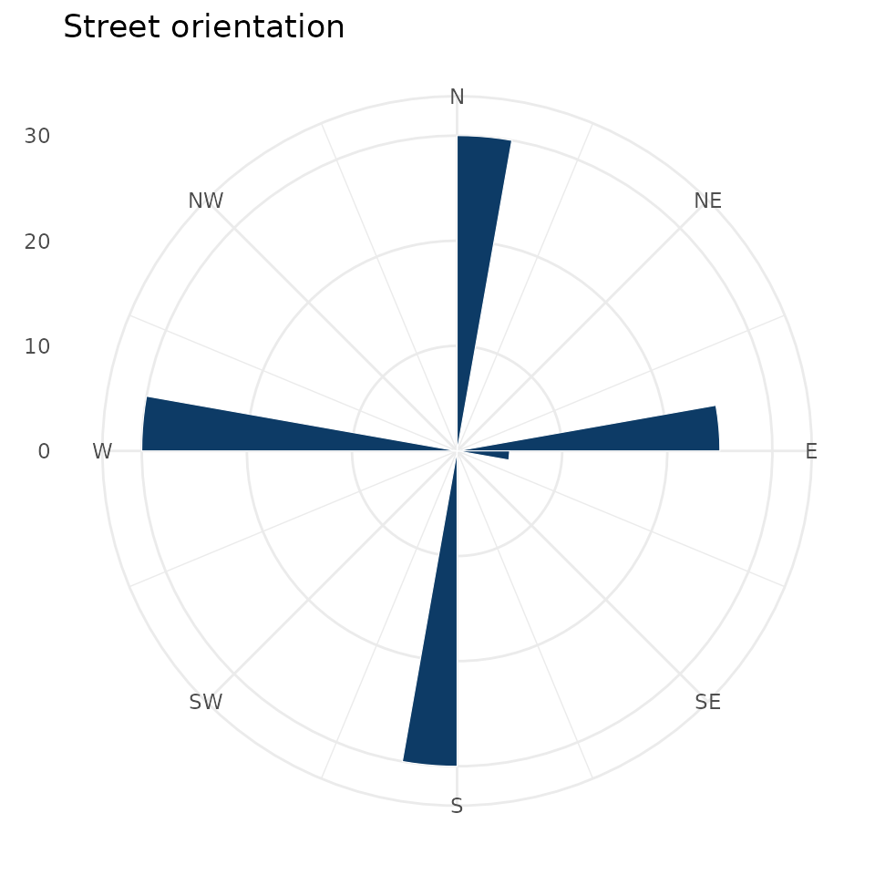

Street-orientation analysis asks how ordered a city’s grid is.
osmnxr computes the compass bearing of every edge and
summarises the distribution with Shannon entropy, all in the Rust
core.
Bearings
g <- example_osm_graph(n = 6, spacing = 100)
b <- ox_bearings(g)
table(round(b))
#>
#> 0 90 180 270
#> 30 30 30 30A regular grid points in only a few directions, so its bearings cluster.
Orientation entropy
Entropy (in nats) is low for an ordered gridiron and high for a disordered, organic network. The perfectly aligned grid sits near the low end:
ox_orientation_entropy(g)
#> [1] 1.498935For comparison, a network whose streets ran in every direction
equally would approach log(num_bins):
log(36)
#> [1] 3.583519Rose plot
ox_plot_orientation() draws the classic polar histogram
of bearings (requires ggplot2):
ox_plot_orientation(g, num_bins = 36)
With a real network this is where the character of a city shows:
download one with ox_graph_from_place(), simplify it, and
plot:
city <- ox_graph_from_place("Manhattan, New York, USA", network_type = "drive")
city <- ox_simplify(city)
ox_orientation_entropy(city) # low: a famous grid
ox_plot_orientation(city)